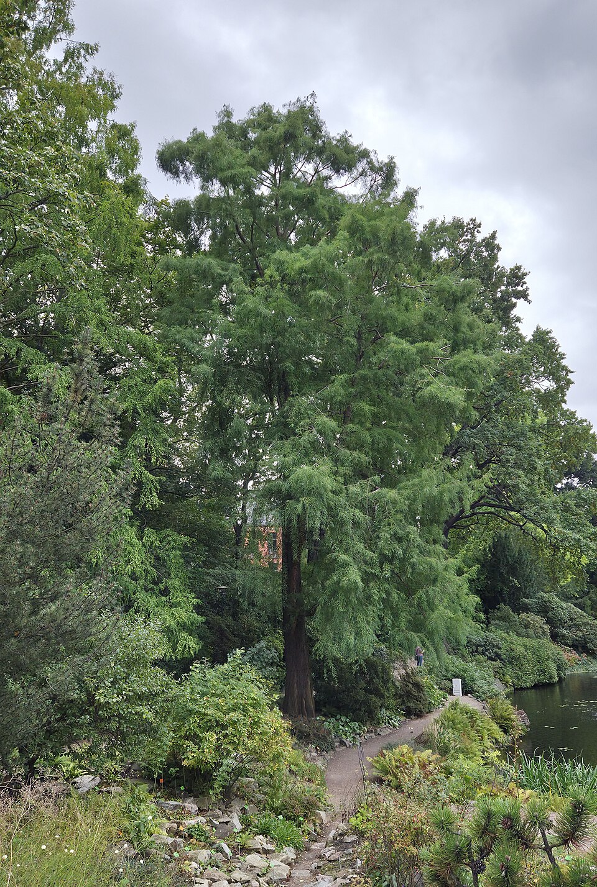
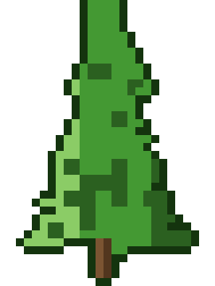

Taxodium — Bald Cypress (Taxodium)
The Bald Cypress is a 2,600-year-old swamp fortress — it stands in flooded ground where others drown, grows armored knees from the mud, and simply outlasts everything that ever dared to fight it.
Combat flavor
Legendary durability translates directly to a near-unkillable tank role — the rot-resistant wood is a natural passive regen / damage-reduction trait. The pneumatophore knees could function as obstacle-terrain hazards placed around the Taxodium's base.
Real-world facts
Typical / max height18–35 m typical in landscape; up to 44 m (145 ft) in the wild
LifespanExceptionally long-lived — the oldest confirmed individual is 2,624 years old (Black River, North Carolina); multiple specimens exceed 2,000 years; 5th-oldest non-clonal tree species on Earth
WoodAir-dry density ~515 kg/m³; Janka hardness ~2,270 N (510 lbf). Famed for extreme natural rot resistance ("wood eternal" reputation in old-growth; used in boat-building, exterior construction, and dock pilings)
Growth speedMedium (moderately fast in youth; 40–50 ft in 15–25 years)
Ecology / notable traitsDeciduous conifer (one of only ~5 globally); produces pneumatophores ("knees") — woody root projections emerging from saturated soil, possibly for gas exchange; tolerates prolonged flooding; native to southeastern US swamps and river valleys; not invasive but locally dominant; strong cultural/spiritual significance in Indigenous and American Southern traditions
Gallery

